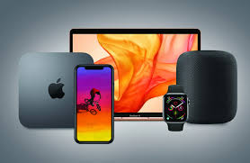
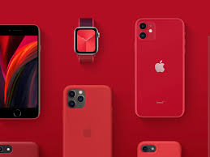
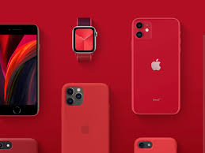
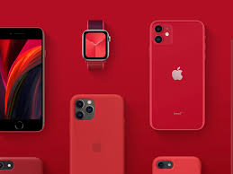
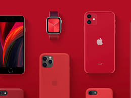
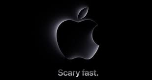

Our Products
Explore the latest technology and innovations.

 



Apple Inc. is a globally renowned technology company known for its innovation, sleek design, and cutting-edge products. Founded by Steve Jobs, Steve Wozniak, and Ronald Wayne in 1976, the company revolutionized the personal computing industry with the Apple II and later the Macintosh. Apple’s ethos centers around creating user-friendly, aesthetically pleasing products that seamlessly integrate hardware and software, as seen in its flagship products like the iPhone, iPad, and Mac computers. The introduction of the iPhone in 2007 set a new standard for smartphones, combining functionality, style, and an intuitive user experience. The brand’s ecosystem, including the App Store, iCloud, and services like Apple Music, creates a seamless, interconnected experience for its users. Apple's commitment to privacy and security is a cornerstone of its brand, often highlighting its dedication to protecting user data. The company’s retail stores, with their minimalist design and focus on customer experience, are iconic, serving as both a sales and service hub. Apple has a strong focus on sustainability, with initiatives aimed at reducing its carbon footprint and using recycled materials in its products. Known for its marketing prowess, Apple’s advertising campaigns, like the "Think Different" slogan and the silhouette iPod commercials, have left a lasting impact on popular culture. Today, under the leadership of CEO Tim Cook, Apple continues to push the boundaries of technology, with a strong focus on innovation, customer satisfaction, and maintaining its position as one of the world’s most valuable and influential brands.
